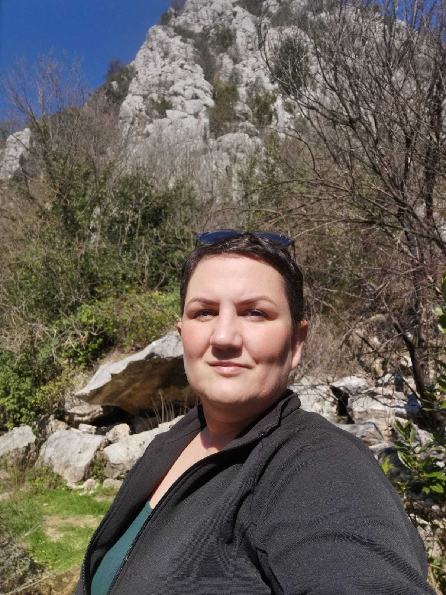

Tko je Caspera
Udruga kao takva ne znači ništa, jer je to samo mrtvo slovo na papiru.
Kada tom slovu dodate prave ljude koji će potom sve začiniti ljubavlju, iskustvom, dobrom voljom i najboljim idejama dobit ćemo nešto što se zove udruga CASPERA.
Svaka osoba u našoj priči, itekako, doprinosi radu udruge.
Stoga, dopustite da vam predstavimo uzdanice Udruge:

Ime člana tima
Uloga
Opis člana tima.